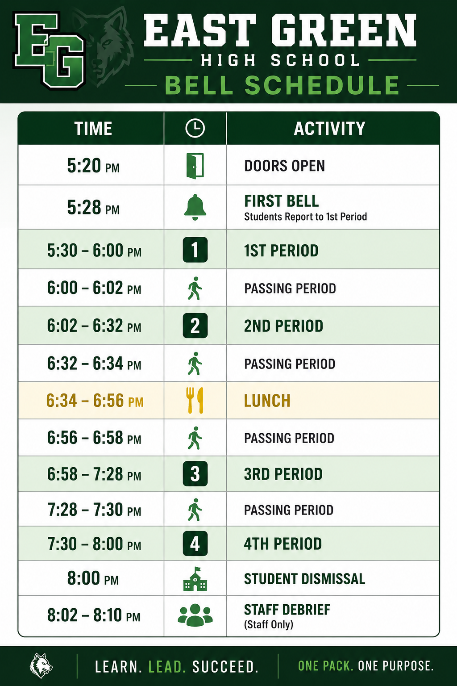
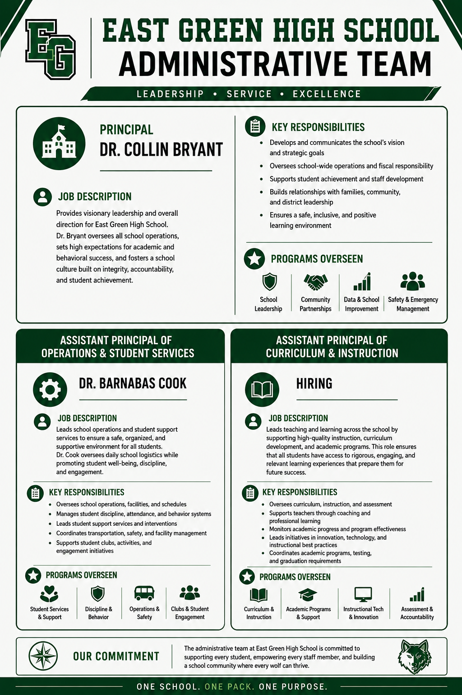

East Green
High School
A detailed American high-school roleplay experience built around strong academics, realistic school operations, student support, career pathways, activities, and an organized A/B block schedule.
Built like a real high school.
East Green combines a compact evening program with a full academic and administrative structure designed specifically for organized Roblox school roleplay.
Standard Bell Schedule
Monday and Wednesday are A Days. Tuesday and Thursday are B Days. Friday follows the Green Day schedule.
| Time | Activity |
|---|---|
| 5:20 PM | Doors Open |
| 5:28 PM | First Bell / Report to 1st Period |
| 5:30–6:00 PM | 1st Period |
| 6:02–6:32 PM | 2nd Period |
| 6:34–6:56 PM | Lunch |
| 6:58–7:28 PM | 3rd Period |
| 7:30–8:00 PM | 4th Period |
| 8:00 PM | Student Dismissal |
| 8:02–8:10 PM | Staff Debrief |

A/B Block + Green Day
Students can carry eight yearlong courses across two alternating schedules while Friday remains available for advisory, intervention, enrichment, pathway labs, clubs, testing, and extended projects.
Monday & Wednesday
A DAYA1 through A4 meet for 30 minutes each, with lunch between second and third period.
Tuesday & Thursday
B DAYB1 through B4 meet using the same bell times, allowing students to carry a second set of four classes.
Friday
GREEN DAYG1 Advisory • G2 Intervention • G3 Enrichment • G4 Flex / Extended Learning.
Four signature pathways.
Business & IT
Information technology, computer applications, cybersecurity, web design, entrepreneurship, and personal finance.
Law & Public Safety
Criminal justice, law enforcement, investigations, public-safety communications, and emergency management.
Culinary & Hospitality
Culinary foundations, practical food-service skills, hospitality operations, and tourism management.
Arts & Design
Visual art, photography, graphic design, digital art, theatre, and creative production.
School administration
Dr. Collin Bryant
Principal • Overall school leadership, strategic direction, safety, operations, staff, community partnerships, and school improvement.
Dr. Barnabas Cook
Assistant Principal of Operations & Student Services • Daily operations, attendance, discipline, student services, safety, and student engagement.
Assistant Principal of Curriculum & Instruction
HIRING Curriculum, instruction, assessment, academic programs, teacher support, and instructional improvement.

Need to know who to contact?
Teachers handle class-specific concerns. Counselors handle planning, scheduling, graduation, and student support. The Registrar manages official student records. Dr. Cook handles major attendance, discipline, and Student Services concerns.
View Student Services